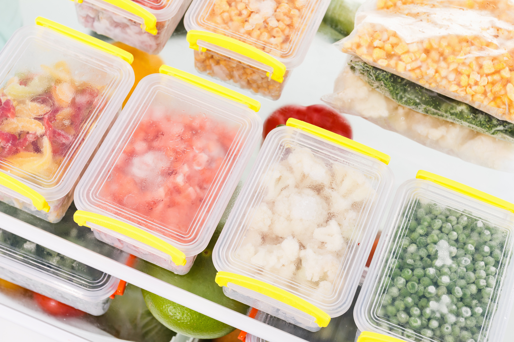
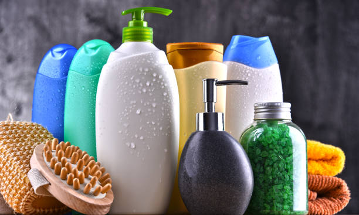

<ion-header [translucent]="true">
  <ion-toolbar>
    <ion-title>
      Departamentos
    </ion-title>
  </ion-toolbar>
</ion-header>

<ion-content class="conteudoPrincipal">
  <ion-card>
    
    <ion-title>Hortifruti</ion-title>
  </ion-card>
  <ion-card>
    
    <ion-title>Açougue</ion-title>
  </ion-card>
  <ion-card>
    
    <ion-title>Laticínios</ion-title>
  </ion-card>
  <ion-card>
    
    <ion-title>Congelados</ion-title>
  </ion-card>
  <ion-card>
    
    <ion-title>Higiene Pessoal</ion-title>
  </ion-card>
  <ion-card>
    
    <ion-title>Limpeza</ion-title>
  </ion-card>
</ion-content>